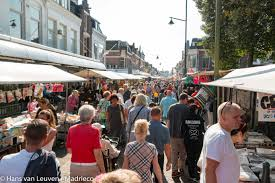
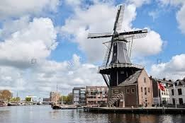

EEN BEZOEK AAN HAARLEM-NOORD IS DE MOEITE WAARD! WINKELEN  Haarlem-Noord kent twee grote winkelgebieden: Generaal Cronjé straat en het vernieuwde Marsmanplein. De Cronjé is een heerlijke straat om te shoppen met bijna 150 verschillende winkels. De winkelstraat bestaat al meer dan 100 jaar en diverse winkels zijn er al decennia lang gevestigd. Ook de landelijke ketens zoals Hema, Blokker en Vero Moda hebben inmiddels een vestiging in deze winkelstraat. De specialistische winkels trekken zelfs klanten uit het gehele land en na afloop neem je plaats op het terras van één van de vele horecabedrijven. Door de luifels boven de winkels kun je hier ook prima winkelen met regenachtig weer. Winkelcentrum Marsmanplein is niet alleen een goede keuze voor de dagelijkse boodschappen, maar ook om gezellig te winkelen. Naast de grote supermarkten als Albert Heijn en Plus vind je hier ook de kleine speciaalzaken zoals de slager, visboer, kaaswinkel en warme bakker. Op het gezellige plein met zijn horecazaken worden regelmatig evenementen georganiseerd. CULTUUR  Museum het Dolhuys is het museum van de geest en gevestigd in een oud leprozenpest en dolhuis uit 1320. In dit museum maak je kennis met bijzondere geesten: mensen die anders functioneren dan ‘normale’ mensen. Laat je inspireren door hun bijzondere verhalen. Molen de Adriaan ligt aan de rivier het Spaarne en vormt door zijn grote hoogte al eeuwenlang een markant bouwwerk in Haarlem. De molen herbergt een panorama van Haarlem rond 1800, panelen en wandschilderingen over de geschiedenis van Haarlem en de Adriaan en een permanente expositie over de techniek van molens. Als u de stelling betreedt, twaalf meter boven de rivier, heeft u een spectaculair uitzicht over de oude stad. Ook het Frans Hals museum, Teylers museum, de Haarlemse Hofjes en de verschillende kerken zijn de moeite van een bezoek waard. BEDRIJVEN Haarlem Business Park Waarderpolder is het grootste bedrijventerrein van Zuid-Kennemerland en biedt ruimte voor pioniers en grote gevestigde bedrijven als de farmaceutisch bedrijven TEVA en MSD en telecombedrijf KPN. 1100 Bedrijven hebben zich hier gevestigd en 14.500 werknemers verdienen hier hun dagelijks brood.